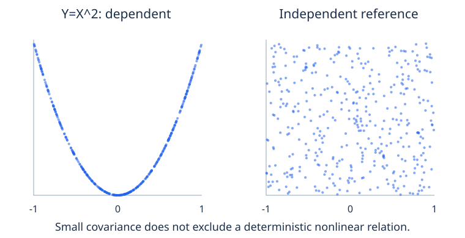

平均与依赖需要联合模型
期望把分布变成平均量，方差及协方差描述变异的某些方面，却不替代完整联合模型。本课推精确矩，证明线性无需独立，分解条件变异，并连接协方差与几何，不把零相关误当独立，也不把解释方差误当预测价值。
检索检查： 模块 22 提供随机变量与分布；连续积分需模块 17。选学向量协方差用模块 12，选学PCA回顾模块 14。CS用全部离散例和替代。实验仅用Python标准库，连续与向量输出明确标记。
变量 函数及算法成本的期望
有限离散X的期望E[X]=Σ_x x p_X(x)，是X单位下的加权平均，不必为可能实现值：公平Bernoulli期望1/2，观察却仅0或1。函数g的E[g(X)]=Σ_x g(x)p_X(x)，无需先构造输出表；合并相同输出原像得到同结果，证明有限公式。联合表对应E[g(X,Y)]=Σ_{x,y}g(x,y)p(x,y)。
可数有符号变量的有限期望需E[|X|]=Σ|x|p_X(x)<∞，允许绝对收敛重排。非负变量可有扩展期望+∞；正负部分若都无限，不能相减定义E[X]。对称截断给零不能修复无限减无限。连续分支用密度积分及绝对可积条件，概念相同。
有限模型线性直接由结果和证明：E[aX+bY]=Σ_ω(aX(ω)+bY(ω))p_ω=aE[X]+bE[Y]。不使用联合分解，所以不需独立。有限个可积变量可按合法和/积分线性延伸。乘积E[XY]=E[X]E[Y]不同，需独立等足够条件及矩存在；线性本身不给它。函数移出期望通常也错：E[X²]不必等(E[X])²。
成功搜索按1,…,4检查，目标K质量1/2、1/4、1/8、1/8。比较数为K，E[K]=1/2+2/4+3/8+4/8=15/8=1.875。均匀位置给5/2。同算法不同输入模型平均成本不同，最坏成功成本仍4。若允许搜索失败，须加入失败事件和全扫描成本，不可暗中条件于成功。
指示变量便于平均成本。1_A在A为1其余0，故E[1_A]=P(A)。计数N=Σ1_{A_i}的期望ΣP(A_i)，即使事件依赖。非负整数恒等N=Σ_{k≥1}1{N≥k}给E[N]=ΣP(N≥k)，无限非负交换由单调部分和证明，有限有界只需有限线性。搜索尾1、1/2、1/4、1/8和为15/8。
有效归一模型也可无限期望。P(X=n)=1/[n(n+1)]，n≥1，前N质量望远镜和1−1/(N+1)，总概率1。但E[X]=Σ1/(n+1)发散，按二的幂分组每块有统一正下贡献。有限模拟平均总有限，不让总体均值变有限。相同大小质量各半分到±n，正负期望都无限，符号均值未定义。
期望是模型总体性质，样本平均是观察统计量，可在适当抽样设计下估它，但不定义它。重复、选择与依赖能改变统计目标。模块24给有限方差样本均值及极限条件，不把所有大数据平均当通用收敛。解释平均成本或损失前说明可积、目标总体和生成假设。
期望成本是加权和或指示概率和。线性允许依赖，但须指定输入位置模型。
期望必须是可观察值吗？线性需要独立吗？有效概率模型能有无限或未定义均值吗？
查看答案
Bernoulli的1/2不必实现。有限线性无独立分解要求。望远镜正大小模型均值无限，其对称符号版本两部分发散而均值未定义。
方差 矩存在与尺度改变
有限二阶矩X的μ=E[X]有限，Var(X)=E[(X−μ)²]≥0，展开得E[X²]−μ²。二阶有限通过与常量1的Cauchy–Schwarz保证一阶绝对可积。标准差√Var保原单位，方差用平方单位。原始二阶矩E[X²]不同于中心矩Var；高阶矩存在性需另检，不继承有限均值。
方差零意味着X=μ几乎必然，允许零概率结果不同。若某k有P(|X−μ|≥1/k)>0，则平方偏差期望至少该概率乘1/k²，矛盾。所有非零偏差事件是这些阈值事件的可数并。这是模型结论，短样本零方差不证明总体零。有些常量及退化模型确实零方差。
常a,b给均值aμ+b、Var(aX+b)=a²Var(X)，因为中心化后为a(X−μ)。加常数不改分散，改单位使方差平方缩放、标准差乘|a|。正方差时Z=(X−μ)/σ有均值0、方差1。标准化不制造Gaussian、独立或消除非线性关系，只改两个矩和单位。
X为Bernoulli(p)，每结果X²=X，故E[X]=E[X²]=p，Var=p−p²。p=.3时分别.3、.3、.21，但(E[X])²=.09。Y=2X+5均值5.6、方差4(.21)=.84，常数五只移位置。
有限均值不保证有限方差。n≥1质量正比1/n³，按几何块比较归一和有限；一阶系列如Σ1/n²同样收敛，二阶如Σ1/n却发散。离散路线可用块比较，不需积分。应报无限方差，不能把有限截断代入再声称总体有限。
连续分支Uniform(−1,1)均值0，二阶∫x²/2=1/3，方差1/3、四阶1/5。指数率λ积分给均值1/λ、二阶2/λ²、方差1/λ²，需模块17及边界项。Gaussian μ,σ²有对应均值方差，σ=0作为原子处理。这些性质来自模型，不是只因样本中心和分散匹配。
观测经验方差常以N除中心平方和；独立同分布有限方差下经典无偏估计用N−1，问题相关却不同。本课经验分布协方差用N，实验3标N−1缩放，模块25再推无偏。任何分母本身都不能修依赖、选择总体或未定义矩。
数值E[X²]−E[X]²可能减大近数而丢小方差，先中心化再累平方通常减少相消，后续数值课讨论稳定算法。数学非负量可能舍入略负，是数值诊断，不能忽视大不一致。解释分散前检查单位、分母及矩存在。
方差与标准差单位怎样不同？标准化创造Gaussian吗？有限均值保证二阶有限吗？
查看答案
方差平方单位，标准差原单位。标准化不决定全分布。1/n³模型均值有限而二阶无限。
联合 边缘与条件分布
联合PMF p(x,y)=P(X=x,Y=y)非负，在联合支持和1。边缘p_X(x)=Σ_y p(x,y)、p_Y(y)=Σ_x p(x,y)，加保留值兼容的全部结果。两边缘不确定联合，多个耦合可共享。独立为每对p(x,y)=p_X(x)p_Y(y)，包括零及支持限制。
p(0,0)=1/2、p(0,2)=1/4、p(1,0)=p(1,2)=1/8。P(X=1)=1/4、P(Y=2)=3/8、EX=1/4、EY=3/4、EXY=1/4、VX=3/16、VY=15/16。联合(1,2)=1/8，边缘乘积3/32，故依赖。只读边缘会隐藏它。
p_Y(y)>0时条件PMF p(x,y)/p_Y(y)归一该列。Y=0的X=1率=(1/8)/(5/8)=1/5，Y=2为(1/8)/(3/8)=1/3。条件期望按条件PMF平均，不按原边缘。零y无基本比值，零情况可选版本不改变无条件平均，但不可称唯一确定的比。
独立可积X,Y的有限乘积期望分解：Σ_xΣ_y xy p_X(x)p_Y(y)=(Σ_x xp_X)(Σ_y yp_Y)。相应可数或密度模型需合法交换及可积。逆不成立：仅产品矩等于均值乘积只是一条约束，而独立约束整个联合；第4节给确定非线性反例。
连续AI分支： 联合密度f(x,y)非负、积分1。边缘积分去另坐标，f_Y(y)>0时条件密度可取f(x,y)/f_Y(y)的适当几乎处处版本。这不是P(X∈A,Y=y)/P(Y=y)，绝对连续Y的分母零。对x积分条件密度得1，随y变化说明联合条件律。
0<x<y<1三角形密度2，面积1/2故归一。边缘f_Y(y)=2y、f_X(x)=2(1−x)，支持各在(0,1)。给内部y，X均匀(0,y)，密度1/y、条件均值y/2。三角支持已耦合变量，不是每个边缘支持对都可出现。积分需模块17，CS用上表。
联合也可用生成序列：先从边缘抽Y，再从条件抽X，乘因子重建p或密度。逆转顺序需重新算条件，不可直接用原前向机制。实现条件分支时保留潜组，以便计数恢复联合，不混边缘条件目标。
向量联合覆盖全部坐标，两两表仍可能漏模块21 xor的高阶依赖。协方差概括每对中心积，即使完整矩阵通常也少于全联合信息。生成故事、联合表、低阶摘要目的不同，需标明哪一个支持推断或算法。
求行列和得边缘，正概率列再归一作条件；含两变量的矩用联合质量。
边缘决定联合吗？条件列分母是什么？EXY=EXEY本身证明独立吗？
查看答案
不同耦合可共享边缘。用该列正Y质量。产品矩等式仅一条件，不是全分布分解。
协方差 相关与零协方差的依赖
有限方差变量Cov=E[(X−μ_X)(Y−μ_Y)]=EXY−μ_Xμ_Y。由|ab|≤(a²+b²)/2，二阶有限保证中心积可积。Cov对称，单位为两变量单位乘积，Cov(aX+b,cY+d)=acCov(X,Y)。正负描述线性中心关联而非因果。独立在这些矩假设下给零Cov，逆一般不成立。
中心和展开给Var(X+Y)=VX+VY+2Cov，差则减2Cov。一般加权和方差Σa_i²VX_i+2Σ_{i<j}a_i a_j Cov。独立许可去交叉项；两两不相关也许可该恒等式简化，却不保证相互独立。精确表Cov=1/4−(1/4)(3/4)=1/16，VarSum=3/16+15/16+2/16=5/4，而错捷径9/8。
两方差正时ρ=Cov/(σ_Xσ_Y)无单位。非负E[(X_c−tY_c)²]，取t=Cov/VY给Cov²≤VX VY，故|ρ|≤1。若方差零，中心变量几乎必然零，Cov零，但普通相关比未定义。应报告退化，不能将0/0写零相关。
X等可能−1,0,1，Y=X²。EX0、EY2/3、EXY=EX³=0，故Cov和ρ均零、两方差正。但P(Y=0|X=0)=1而P(Y=0)=1/3，证明依赖。连续AI对应X均匀(−1,1)，对称也给Cov(X,X²)=0且平方关系精确成立。小协方差可与完全确定的非线性响应共存。
正方差下ρ=±1更强：前平方残差界取等使一个中心变量几乎必然为另一个的非零倍数，符号描述倍数正负。确定非线性关系却可零、中间或其他相关。相关专测线性方面，不能发现非线性并非违背定义。
条件或混合也可改相关，模块21潜组及选中并说明总体关联不必代表各层。正缩放不改ρ却改Cov，负缩放反ρ符号。报告需区分原Cov、无单位ρ、组条件及目标总体，任何系数及符号不建立因果。
有限样本Cov是估计或经验量，依约定而定；总体精确零通常样本略非零。实验2平方与独立参考都有很小样本Cov，但形状和条件结构显著不同。依赖样本平方残差精确零，不靠舍入系数是否恰零判断非线性。
数学主张应证明分解或条件差，不能仅视觉。散点提示诊断和模型，有限图无可见模式不是独立证明。高维Cov组织两两摘要，却可能高阶非线性依赖。第6节Gaussian例外需明确联合假设，不因边缘看似钟形就普遍豁免。
独立何时给零Cov？逆成立吗？一方差零时普通相关怎样？
查看答案
有限相关矩使乘积期望合法。平方反例否定逆。零方差使比未定义，尽管Cov零。
条件期望 全期望与全方差
离散正质量y定义m(y)=E[X|Y=y]=Σ_x x p(x,y)/p_Y(y)。E[X|Y]=m(Y)本身是随机变量，不是一个数；根据实现Y指定对应条件均值。有限模型都存在，一般版本需可积。零情况选版本不改期望，不能当基本比。更一般条件化可理解为按Y所表示信息平均。
全期望把正情况相加：E[m(Y)]=Σ_y p_Y(y)Σ_x xp(x,y)/p_Y(y)=Σ_{x,y}xp(x,y)=EX。必须用实际组概率加权，换等权改变目标，除非组原本等质量。任意h(Y)在可积时，同计算给E[h(Y)(X−m(Y))]=0，此正交性解释全方差及预测性质。
表中Y=0质量5/8、条件均值1/5、方差4/25；Y=2质量3/8、均值1/3、方差2/9。加权均值1/4，期望条件方差11/60，条件均值方差1/240；和3/16匹配VX。等权会改变均值及分解目标。
有限方差X写X−EX=(X−m(Y))+(m(Y)−EX)，展开平方平均。因E[X−m|Y]=0，交叉项零；第一平方条件平均给EVar(X|Y)，第二Var(m)。所以Var(X)=EVar(X|Y)+Var(EX|Y)，两项非负。不需要X,Y独立，分开给定信息后组内残余与条件均值间变异。
条件均值也在所有Y函数预测中极小均方误差。任意平方可积a(Y)，分解X−a=(X−m)+(m−a)，同正交性给E[(X−a)²]=E[(X−m)²]+E[(m−a)²]。后项非负，因此m最优，除零集外唯一。此定理用真实联合及平方损失，拟合预测仅近似m，需数据和估计保证才能继承总体表现。
损失选择重要。二元标签X的条件均值就是成功概率，在平方损失下为最优概率预测。硬零一决策比较两类条件概率：成功概率大于半时预测一最优，平局任意。连续目标绝对误差通常选条件中位而非均值。因此平均定理不建立适用于所有应用损失的通用预测规则。
独立可积X,Y的正条件律都等边缘，m(Y)=EX几乎必然；逆“条件均值常数就独立”错。对称X、Y=X²，E[X|Y]=0，却Y决定X大小，条件分布可变而均值不变。高矩和全条件律保留均值没有的信息。
更多信息的条件化需嵌套塔性质，任意连续条件不能消除。Z是Y函数时再对Z平均E[X|Y]得E[X|Z]，没有此信息嵌套不一般合法。本有限划分证明支持全均值及适当嵌套，不把条件操作当常数乘法或随意交换抵消。
连续条件均值按定义的条件密度积分。第3节三角m(y)=y/2、Y密度2y，EX=∫(y/2)(2y)dy=1/3，与X边缘一致。CS用有限表及预测展开，不需零点事件密度比理解离散。两分支用同信息平均逻辑和适当分布。
探索器改变c=P(X=1,Y=2)，保P(X=1)=1/4、P(Y=2)=3/8。四质量.375+c、.375−c、.25−c、c，要求0≤c≤.25；c=3/32独立。观察Cov、条件均值及组内组间分解变化，而两边缘及各自方差不改。
全方差合期望组内变异及条件均值变异；条件均值有用却不耗尽条件律。
E[X|Y]是数还是变量？哪些权重给全期望？条件均值常数证明独立吗？
查看答案
它是m(Y)，每实现情况给一个值。用Y边缘权。对称平方条件均值常数而条件分布变，因此不独立。
选学AI 协方差矩阵 Gaussian结构与PCA
共享离散成果已完整：期望线性、和含Cov、条件均值方差按权组合。需模块12的向量扩展： 有限二阶随机列X∈Rᵈ，μ逐坐标期望，Σ=E[(X−μ)(X−μ)ᵀ]，i,j项为Cov，立刻对称，对角为坐标方差。矩阵记所有中心两两积，不记任意高阶非线性依赖。
任固定a，aᵀΣa=E[(aᵀ(X−μ))²]=Var(aᵀX)≥0，故半正定。不必正定：坐标精确线性组合产生非零方向零方差。Y=AX+b均值Aμ+b、Cov AΣAᵀ，乘中心外积可证。缩放对应改变单位；本证明用维数及标量方差，不需特征分解。
四中心记录(−2,−1),(−1,−.5),(1,.5),(2,1)，分母4的经验Cov [[2.5,1.25],[1.25,.625]]。a=(2,1)/√5投影方差3.125，垂直(−1,2)/√5方差零，因为全部在y=x/2。矩阵PSD奇异但有效。分母3乘4/3而主方向不改。
中心数据行为Z，经验Cov C_N=ZᵀZ/N；确定表作为经验分布也有该PSD恒等式。独立用于总体估计定理，不是乘积PSD代数所需。未中心化产品为原始二阶矩矩阵而非Cov。N−1约定改变尺度及带抽样假设，模块25展开。
需模块14的选学PCA： 单位a的经验投影方差aᵀC_N a，首特征向量最大化Rayleigh商；正交k维投影由领先特征空间最大保留方差，匹配中心SVD。重复特征值允许多基。解释方差衡量平方重建结构，不等于标签相关、因果重要或分类保证。训练拟合中心和方向，留出复用。
连续Gaussian扩展： 非退化多元Gaussian均值μ、SPD CovΣ的密度exp(−(x−μ)ᵀΣ⁻¹(x−μ)/2)/[(2π)^{d/2}√detΣ]，具有所写均值Cov，其构造归一扩展一元事实。公式需SPD，奇异Gaussian可在低维仿射支持存在但无全维此密度，不可除零行列式。
在联合非退化Gaussian中，坐标块零交Cov蕴含独立：块对角Σ的逆块对角，行列式为块积，密度分解两边缘Gaussian。证明依联合形状，不仅每个边缘Gaussian。别的Gaussian边缘耦合可依赖且不相关，普通平方反例在例外外仍成立。
具体警告：标准Gaussian Z与独立公平符号S，X=Z、Y=SZ。对称给两个边缘标准Gaussian，Cov=E[SZ²]=ES EZ²=0，却每结果|Y|=|X|，所以依赖。联合支持两线y=±x，而非非退化二维Gaussian密度。两个Gaussian边缘或对角Cov不补出缺联合假设；即使Cov正定，也不保证任意联合分布有密度。
每个投影方差非负使Cov半正定，零方向可能表示精确线性关系；高保留方差仍是几何摘要。
实验3修Y=X方差捷径，AI检查经验方向；实验2实际散点比较非线性依赖与独立参考，也保有限CS对应。分开数学矩、有限摘要、估计约定及模型假设。下一步用这些有限方差量建立带独立契约的样本均值、集中与蒙特卡洛陈述。
Cov为何PSD？可奇异吗？零交Cov总给独立，还是Gaussian例外需联合假设？
查看答案
每二次投影是非负方差。精确线性关系给零方向。一般逆失败，密度分解要求所写联合Gaussian及非退化结构。
常见误解
| 说法 | 修正 |
|---|---|
| 期望必须实现。 | 是加权平均，可不在实现支持。 |
| 线性需独立。 | 有限可积和无需分解。 |
| 有限均值给有限方差。 | 二阶存在独立检查。 |
| 边缘决定依赖。 | 还需联合或耦合。 |
| 零相关就是独立。 | 确定平方反驳。 |
| 条件均值常量就是独立。 | 条件律仍可变。 |
| Cov矩阵必可逆。 | PSD可有零方向。 |
| 高PCA方差有好预测。 | 重建方差不认证目标相关。 |
三个可复现实验
实验1 · 精确联合矩与条件分解
下载 lab1_exact_joint_moments.py
"""Joint moments and conditional expectation/variance with exact fractions."""
from fractions import Fraction as F
if __name__ == "__main__":
joint = {(0, 0): F(1, 2), (0, 2): F(1, 4), (1, 0): F(1, 8), (1, 2): F(1, 8)}
ex = sum((x*p for (x, y), p in joint.items()), F(0))
ey = sum((y*p for (x, y), p in joint.items()), F(0))
vx = sum(((x-ex)**2*p for (x, y), p in joint.items()), F(0))
vy = sum(((y-ey)**2*p for (x, y), p in joint.items()), F(0))
cov = sum(((x-ex)*(y-ey)*p for (x, y), p in joint.items()), F(0))
vsum = sum(((x+y-ex-ey)**2*p for (x, y), p in joint.items()), F(0))
assert sum(joint.values()) == 1
print("joint:", {xy: str(p) for xy, p in joint.items()})
print("E(X)=%s E(Y)=%s Var(X)=%s Var(Y)=%s Cov=%s" % (ex, ey, vx, vy, cov))
print("Var(X+Y)=%s independent shortcut=%s" % (vsum, vx+vy))
assert vsum == vx+vy+2*cov
cases = []
for y in (0, 2):
py = sum((p for (x, yy), p in joint.items() if yy == y), F(0))
conditional = sum((x*p/py for (x, yy), p in joint.items() if yy == y), F(0))
conditional_var = sum(((x-conditional)**2*p/py for (x, yy), p in joint.items() if yy == y), F(0))
cases.append((py, conditional, conditional_var))
print("Y=%d: probability=%s E(X|Y)=%s Var(X|Y)=%s" % (y, py, conditional, conditional_var))
total_mean = sum((py*mean for py, mean, var in cases), F(0))
within = sum((py*var for py, mean, var in cases), F(0))
between = sum((py*(mean-ex)**2 for py, mean, var in cases), F(0))
print("total expectation=%s; within variance=%s between variance=%s total=%s" % (
total_mean, within, between, within+between))
assert total_mean == ex and within+between == vx
positions = {1: F(1, 2), 2: F(1, 4), 3: F(1, 8), 4: F(1, 8)}
cost = sum(k*p for k, p in positions.items())
print("specified search-position model E(comparisons)=%s uniform alternative=5/2" % cost)
print("PASS: linearity requires no independence; covariance and conditional mixtures matter")
joint: {(0, 0): '1/2', (0, 2): '1/4', (1, 0): '1/8', (1, 2): '1/8'}
E(X)=1/4 E(Y)=3/4 Var(X)=3/16 Var(Y)=15/16 Cov=1/16
Var(X+Y)=5/4 independent shortcut=9/8
Y=0: probability=5/8 E(X|Y)=1/5 Var(X|Y)=4/25
Y=2: probability=3/8 E(X|Y)=1/3 Var(X|Y)=2/9
total expectation=1/4; within variance=11/60 between variance=1/240 total=3/16
specified search-position model E(comparisons)=15/8 uniform alternative=5/2
PASS: linearity requires no independence; covariance and conditional mixtures matter
预测两边缘、全部矩、Cov贡献及全方差项。比较均匀搜索前先写位置模型。
实验2 · 零Cov与非线性依赖
下载 lab2_zero_covariance_dependence.py
"""A dependent square relation with near-zero sample covariance; SVG scatter."""
import argparse
from pathlib import Path
import random
def moments(pairs):
n = len(pairs)
mx = sum(x for x, y in pairs)/n
my = sum(y for x, y in pairs)/n
vx = sum((x-mx)**2 for x, y in pairs)/n
vy = sum((y-my)**2 for x, y in pairs)/n
cov = sum((x-mx)*(y-my) for x, y in pairs)/n
return mx, my, vx, vy, cov
if __name__ == "__main__":
parser = argparse.ArgumentParser()
parser.add_argument("--output")
args = parser.parse_args()
generator = random.Random(23023)
xs = [generator.uniform(-1, 1) for _ in range(20000)]
dependent = [(x, x*x) for x in xs]
independent = [(x, generator.random()) for x in xs]
print("AI continuous population: X uniform(-1,1), Y=X^2")
print("exact E(X)=0 E(Y)=1/3 Cov(X,Y)=0; Y is determined by X")
for name, pairs in (("dependent square", dependent), ("independent reference", independent)):
mx, my, vx, vy, cov = moments(pairs)
print("%s: meanX=%.6f meanY=%.6f covariance=%.6f correlation=%.6f" % (
name, mx, my, cov, cov/(vx*vy)**.5))
residual = max(abs(y-x*x) for x, y in dependent)
print("square-relation maximum residual:", residual)
assert residual == 0
# CS counterpart uses three equiprobable values, no integration prerequisite.
discrete = [(-1., 1.), (0., 0.), (1., 1.)]
print("CS discrete counterpart X=-1,0,1 equally likely: covariance=%.1f" % moments(discrete)[4])
if args.output:
drawing = ['<svg xmlns="http://www.w3.org/2000/svg" viewBox="0 0 760 390" role="img" aria-label="Dependent square relation and independent reference scatter plots">',
'<rect width="760" height="390" fill="white"/>',
'<g font-family="system-ui,sans-serif" fill="#1a2e4a">']
for offset, name, pairs in ((0, "Y=X^2: dependent", dependent), (380, "Independent reference", independent)):
drawing.append('<text x="%d" y="30" font-size="21" text-anchor="middle">%s</text>' % (offset+190, name))
drawing.append('<path d="M%d,65V320H%d" fill="none" stroke="#94a3b8"/>' % (offset+55, offset+330))
for x, y in pairs[::50]:
px, py = offset+55+(x+1)*137.5, 320-y*250
drawing.append('<circle cx="%.3f" cy="%.3f" r="2.1" fill="#2563eb" opacity=".55"/>' % (px, py))
for t in (-1, 0, 1):
drawing.append('<text x="%.1f" y="348" text-anchor="middle" font-size="16">%d</text>' % (offset+55+(t+1)*137.5, t))
drawing.append('<text x="380" y="378" text-anchor="middle" font-size="18">Small covariance does not exclude a deterministic nonlinear relation.</text></g></svg>')
Path(args.output).write_text("\n".join(drawing), encoding="utf8")
print("Scatter figure written; its dependent sample obeys the square relation exactly.")
AI continuous population: X uniform(-1,1), Y=X^2
exact E(X)=0 E(Y)=1/3 Cov(X,Y)=0; Y is determined by X
dependent square: meanX=0.002058 meanY=0.336513 covariance=-0.000509 correlation=-0.002920
independent reference: meanX=0.002058 meanY=0.499427 covariance=-0.000252 correlation=-0.001497
square-relation maximum residual: 0.0
CS discrete counterpart X=-1,0,1 equally likely: covariance=0.0
Scatter figure written; its dependent sample obeys the square relation exactly.

CS三等可能值无需积分，AI用模块17推连续平方。脚本在课程构建时生成实际散点；比较样本近零与总体精确零、非线性关系精确成立。
实验3 · 方差错误与选学几何
下载 lab3_variance_and_covariance_geometry.py
"""Repair an independence variance shortcut; optional AI covariance/PCA geometry."""
from fractions import Fraction as F
from math import sqrt
if __name__ == "__main__":
p = F(3, 10)
vx = p*(1-p)
cov = vx # Y=X, not an independent copy.
correct = vx+vx+2*cov
print("CS: X Bernoulli(.3), Y=X")
print("Var(X)=%s Cov(X,Y)=%s Var(X+Y)=%s wrong independent sum=%s" % (
vx, cov, correct, 2*vx))
assert correct == F(21, 25)
data = [(-2., -1.), (-1., -.5), (1., .5), (2., 1.)]
n = len(data)
mean = [sum(row[i] for row in data)/n for i in range(2)]
centered = [[row[i]-mean[i] for i in range(2)] for row in data]
covariance = [[sum(row[i]*row[j] for row in centered)/n for j in range(2)] for i in range(2)]
principal, orthogonal = [2/sqrt(5), 1/sqrt(5)], [-1/sqrt(5), 2/sqrt(5)]
print("AI geometry (Modules12/14): covariance uses denominator N, training mean only")
print("mean:", mean, "covariance:", covariance)
for name, direction, eigenvalue in (("principal", principal, 3.125), ("orthogonal", orthogonal, 0.)):
scores = [sum(row[i]*direction[i] for i in range(2)) for row in centered]
variance = sum(s*s for s in scores)/n
matrix_product = [sum(covariance[i][j]*direction[j] for j in range(2)) for i in range(2)]
assert max(abs(matrix_product[i]-eigenvalue*direction[i]) for i in range(2)) < 1e-12
assert abs(variance-eigenvalue) < 1e-12
print("%s direction=(%.6f,%.6f) projected variance=%.6f eigenvalue=%.6f" % (
name, *direction, variance, eigenvalue))
sample_covariance = [[v*n/(n-1) for v in row] for row in covariance]
print("denominator N-1 covariance:", sample_covariance)
print("Direction unchanged by common scaling; target covariance and estimator convention differ.")
print("PASS: dependence contributes twice its covariance; PSD covariance can be singular")
CS: X Bernoulli(.3), Y=X
Var(X)=21/100 Cov(X,Y)=21/100 Var(X+Y)=21/25 wrong independent sum=21/50
AI geometry (Modules12/14): covariance uses denominator N, training mean only
mean: [0.0, 0.0] covariance: [[2.5, 1.25], [1.25, 0.625]]
principal direction=(0.894427,0.447214) projected variance=3.125000 eigenvalue=3.125000
orthogonal direction=(-0.447214,0.894427) projected variance=0.000000 eigenvalue=0.000000
denominator N-1 covariance: [[3.3333333333333335, 1.6666666666666667], [1.6666666666666667, 0.8333333333333334]]
Direction unchanged by common scaling; target covariance and estimator convention differ.
PASS: dependence contributes twice its covariance; PSD covariance can be singular
修Y=X独立捷径。AI用模块12/14比较投影方差与特征值，明确N分母，解释N−1仅缩放而不改本例方向。
十四道练习及完整解答
练习1–12必做，等时路线替代；选做13–14在十小时外增35分钟。
搜索位置质量1:1/2,2:1/4,3:1/8,4:1/8，算期望比较及均匀假设改变。
查看解答
15/8=1.875，亦尾和1+1/2+1/4+1/8。均匀5/2，最坏成功4不改，若失败须另加事件。
Bernoulli(.3)算E[X²]、Var及Var(2X+5)。
查看解答
X²=X，二阶.3，Var=.3−.09=.21，仿射Var=.84，五只改均值。
精确联合表算Cov及VarSum。
查看解答
EX1/4、EY3/4、EXY1/4给Cov1/16。两方差3/16、15/16，总20/16=5/4；漏二倍Cov给9/8。
X等可能−1,0,1，Y平方，算均值、Cov及一个条件依赖证明。
查看解答
EX0、EY2/3、EXY0、Cov0。P(Y0|X0)=1不同于P(Y0)=1/3。两方差正，相关零合法但不独立。
无独立证明有限期望线性，并推事件计数期望。
查看解答
对结果求和(aX+bY)p并分配得aEX+bEY；E1_A=P(A)，故和期望为概率和，允许重叠依赖，不出现联合乘积假设。
证明和方差并写独立捷径假设。
查看解答
中心化平方展开平均得VX+VY+2Cov，有限二阶保项存在。独立给EXY=EXEY、Cov零；不相关也去交叉项但不建立全独立。
用条件均值残差证明全方差及交叉项零。
查看解答
m=EX|Y，X−EX=(X−m)+(m−EX)。两平方平均为EVar(X|Y)、Var(m)，因E[X−m|Y]=0交叉零。需有限方差及实际边缘权。
算表中Y0、Y2条件均值与总均值。
查看解答
列质量5/8、3/8给均值1/5、1/3，权和1/8+1/8=1/4。等权4/15是另一个混合，不是该Y律。
CS：Bernoulli(.3)且Y=X，算VarSum。AI替代：算线数据Cov主及垂直投影方差。
查看解答
CS Var(2X)=4(.21)=.84，Cov.21补交叉。AI主(2,1)/√5给3.125，垂直(−1,2)/√5为零，符合精确线和PSD奇异。
解释条件均值为何最小平方预测误差，及拟合后还缺什么。
查看解答
风险(a)=风险(m)+E[(m−a)²]，正交杀交叉，真条件均值除零集最优。拟合仍需抽样、近似及评估假设，总体定理不认证有限数据表现。
小相关平方样本被称独立，常量X被赋零相关。修正。
查看解答
平方由X确定Y，即使总体Cov零；查条件或关系残差。常量X标准差零，Cov零但相关除零未定义，小样本系数不是独立证书。
条件均值用等权却组质量不同，所有PSD被称可逆。修正。
查看解答
全期望需实际组权，本表5/8、3/8而非半。PSD只给非负投影，线性关系有零方向而奇异，可逆需正定。
CS证明有限联合平方风险正交展开。AI替代证明Cov变换及PSD。
查看解答
CS每正y的条件残差和零，乘m−a再按Y权求和杀交叉。AI中心Y=A中心X，外积期望AΣAᵀ；任v的二次=平方期望≥0。
CS证明1/[n(n+1)]归一及无限均值，再说对称符号。AI替代证明SPD块对角Gaussian块独立。
查看解答
CS前缀1−1/(N+1)→1，均值Σ1/(n+1)按二幂块发散；分符号两部各无限，所以均值未定义，尽管有限对称截断零。AI逆及行列式按块分，联合Gaussian密度为两边缘积，联合假设不可省。
十题自测
查看答案
X1质量1/4、Y2质量3/8，EX1/4、EY3/4、EXY1/4、Cov1/16；方差3/16、15/16给总5/4。条件均值1/5、1/3按5/8、3/8平均1/4；组内11/60加组间1/240为3/16。对称X与平方Y依赖但Cov零。表矩都有限，样本系数波动，不建立全总体律。
有目的的阅读
读MIT 6.041SC期望、联合、条件，AI选作者Mathematics for Machine Learning配套页Cov及Gaussian。本课给完整初等有限证明与连续先修。
| 时间 | 选读及问题 |
|---|---|
| 第1次 · 15分钟 | 期望与矩：哪些操作需独立、哪些只需可积？ |
| 第4次 · 15分钟 | 条件与Cov：低阶摘要保什么信息？ |
检索 结业任务与下一步
算加权成本及联合矩，证线性与方差，解释零Cov依赖，推全期望方差。AI加PSD与带资格Gaussian分解，连接经验方差与中心PCA。
结业任务： 复现3/16=11/60+1/240，解释条件均值为何用5/8及3/8；另给非线性不相关却依赖例。
可以继续： 你能将平均与变异附在明确分布及矩假设上。极限定理和蒙特卡洛将用它们描述具有独立和不确定契约的样本均值。见课程总览。
记号与双语术语
| 记号或术语 | 含义 | English |
|---|---|---|
| E[X]、E[ | X | ] |
| Var、σ | 中心二阶、标准差 | Variance, standard deviation |
| p(x,y)、边缘 | 联合质量、求和保留变量 | Joint, marginal |
| Cov、ρ | 中心积、无单位相关 | Covariance, correlation |
| E[X | Y]、全方差 | 条件均值变量、组内加组间 |
| Σ、PSD | Cov矩阵、投影非负 | Covariance matrix, PSD |
| 经验分布 | 每记录1/N质量 | Empirical distribution |